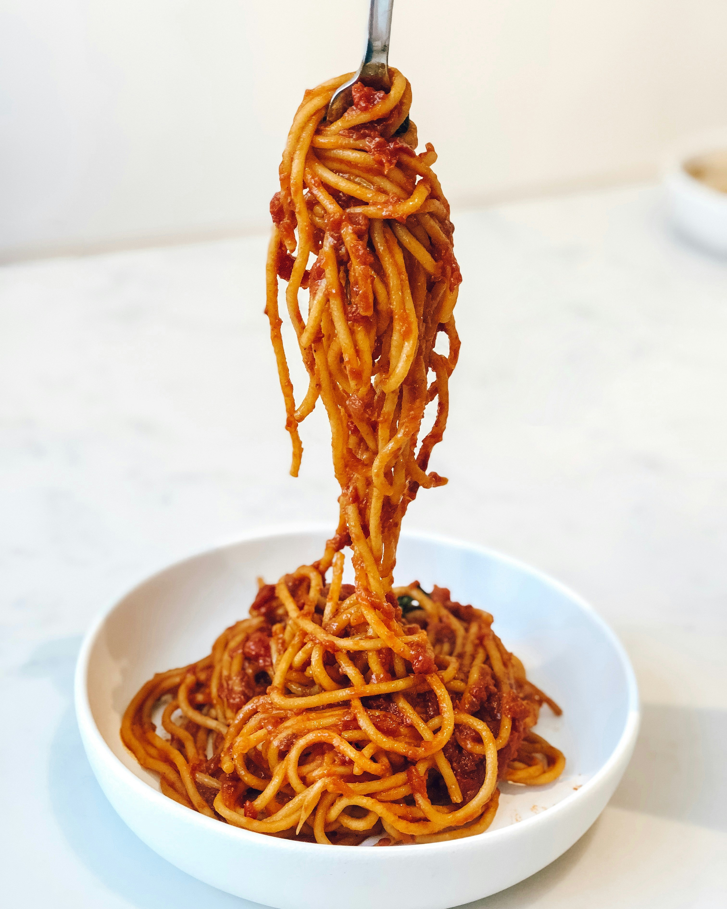

Pasta al Pomodoro

Home
Ingredients
- 200g di spaghetti o penne
- 400g di passata di pomodoro
- 2 cucchiai di olio extravergine di oliva
- 1 spicchio di aglio
- Foglie di basilico fresco
- Sale q.b.
- Pecorino o parmigiano grattugiato q.b. (facoltativo)
Preparation
- Cuoci la pasta in acqua salata bollente.
- In una padella, soffriggi l'aglio in olio extravergine di oliva.
- Aggiungi la passata di pomodoro e cuoci per circa 15-20 minuti.
- Regola di sale e aggiungi le foglie di basilico.
- Scola la pasta e condiscila con la salsa di pomodoro.
- Servi con formaggio grattugiato a piacere.